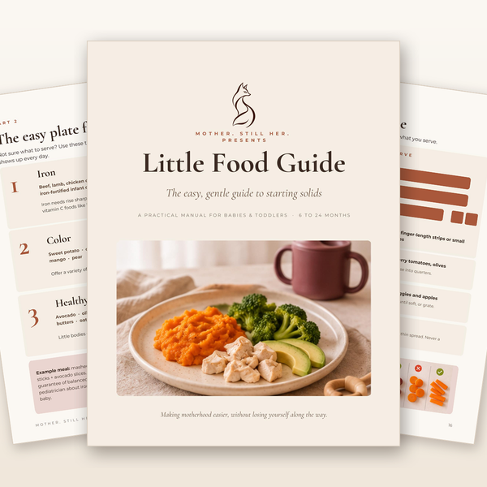

The Little Food Guide gives you clear answers, a gentle first-weeks plan and easy recipes, so mealtime feels lighter for you and your baby.
A simple, affordable, straight-to-the-point guide to make motherhood a little lighter and more practical.
Instant digital download · 28-page PDF · 7-day money-back guarantee

You’ve read the articles. You’ve asked your friends. And somehow every answer is different.
Starting solids is a big milestone. It shouldn’t feel like a test you might fail.
The Little Food Guide is a short, practical manual that walks you through starting solids, one clear step at a time. No long chapters. No guilt. Just what you need to feed your baby safely and keep your own life running.
It’s written in plain English and organized so you can find an answer in seconds, even on a day when you’re holding a baby with one arm.
The guidance follows commonly accepted U.S. recommendations, including those from the American Academy of Pediatrics (AAP) and the CDC.
Feeding a baby well isn’t about perfect recipes. It comes down to four simple things: knowing when your baby is ready, offering a variety of foods, keeping every bite safe, and building a routine you can actually keep. This guide is built around exactly that.
It is a short, beautifully organized guide with the plan, the safety basics and the simple routines that make starting solids feel calm.
Clear pages on choking, allergens, safe shapes and food storage.
Short sections, checklists and tables you can scan quickly.
Works for purées, baby-led feeding or a mix of both.
No pressure, no guilt, no “perfect mom” standards.
A calm, editorial design you’ll actually enjoy opening.
Please note: This guide shares general education and is not medical advice. If your baby has a medical condition, a known food allergy or feeding difficulties, talk with your pediatrician first.
Add real testimonials once you have your first customers. Please don’t use invented reviews.
We create practical digital products that make everyday motherhood easier, lighter and more intentional.
Our belief is simple: motherhood is part of who you are. It is not all that you are. So everything we make is designed to give you answers, save you time and leave a little room for the woman behind the mom.
[Optional: add a short founder note with your photo and one personal sentence about why you created this guide.]
You’ll get instant access to:
[Optional: “That’s about the price of [a takeout lunch] for a guide you’ll use for the next 18 months.”]
Because we want as many moms as possible to start solids feeling calm and prepared. This isn’t a long course and it doesn’t need fancy tools. It’s a short, practical guide you can use today. An easy yes, with a guarantee behind it.
[Optional launch offer for Instagram followers: “Launch price until [real date].” Only use a deadline you will truly honor.]
Add-on at checkout (Hotmart order bump): [Once your complete guide is ready, offer it here at [$19]: “Add the Complete Little Food Guide, with many more recipes. [One-line description]. Special price when added now: [$XX].”]
Yes, I Want the GuideSecure checkout · Instant access by email · 7-day guarantee
Open the guide, read it, use it. If it isn’t what you expected, send us a message within 7 days of your purchase and we’ll refund you in full. No complicated steps.
It covers babies and toddlers from about 6 to 24 months.
No. It is educational and based on commonly accepted U.S. recommendations. Always check with your pediatrician, especially if your baby was born early, has eczema, a known food allergy or any feeding concern.
Not at all. The guide includes simple recipes and batch-prep tips, and it reminds you that store-bought options count too.
Both. The guide explains each approach and how to combine them.
Yes. You’ll find a clear page on introducing the 9 common allergens, what to watch for and when to check with your pediatrician first.
Right after your purchase you’ll receive an email with a link to download the PDF.
Yes. It works on any phone, tablet or computer.
You’re covered by our 7-day guarantee.
You don’t have to figure this out alone, and you don’t have to do it perfectly. Get a clear plan, a few easy recipes and the confidence to start.
Get the Little Food GuideP.S. Your baby won’t remember if the first spoonful was messy. What they’ll feel is a calm, happy mom at the table. This guide is here to help with that.